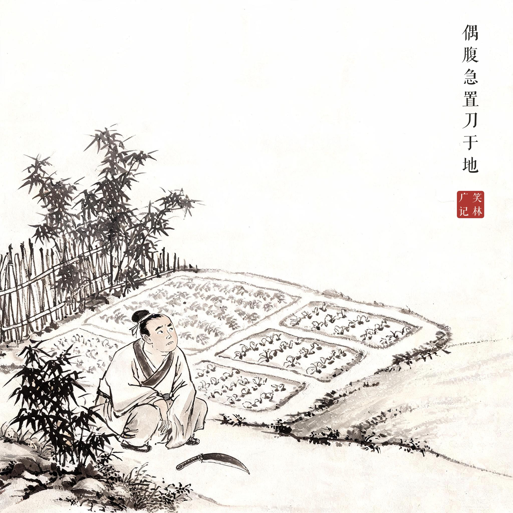

《笑林广记 · 殊禀部》（[清]游戏主人纂集）
一人持刀往园砍竹，偶腹急，乃置刀于地，就园中出恭。忽抬头曰："家中想要竹用，此处倒有许多好竹，惜未带得刀来。"解毕，见刀在地，喜曰："天随人愿，不知那个遗失这刀在此。"方择竹要斫，见所遗粪，便骂曰："是谁狗肏的，阿此脓血，几乎屣了我的脚。"须臾抵家，徘徊门外曰："此何人居？"妻适见，知其又忘也，骂之。其人怅然曰："娘子颇有些面善，不曾得罪，如何开口便骂？"
一个人拿着刀进园砍竹，忽然肚子急了，便把刀放在地上，蹲在园里出恭。一抬头说："家里正想用竹子，这里倒有这么多好竹，可惜没带刀来。"完事之后，见刀在地，喜道："天随人愿，不知是哪个把刀丢在这儿。"刚要挑竹子砍，看见自己留下的那堆东西，骂道："哪个狗才拉的，一摊脓血似的，差点脏了我的脚。"过了一会儿回到家，在门口打转："这是谁家？"他老婆出来，知道他又犯了老毛病，张口就骂。这人怅然道："娘子瞧着有些面善，我们又没结过怨，怎么一开口就骂？"
记性的丈量单位原来是几步路：放下刀、蹲下去，短短一截人生就重启了三回——见竹忘刀、见刀忘屎、到家忘妻。笑他之前不妨先想想自己：刚才走进园子，是要来干什么的来着？